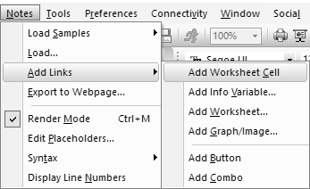
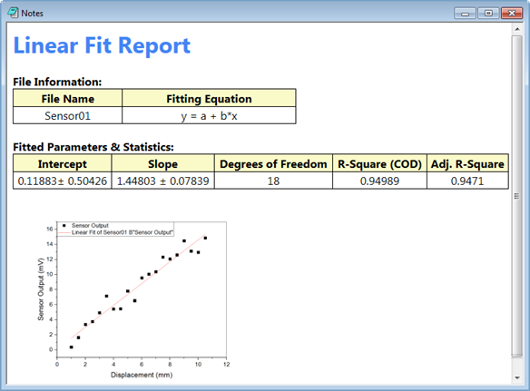
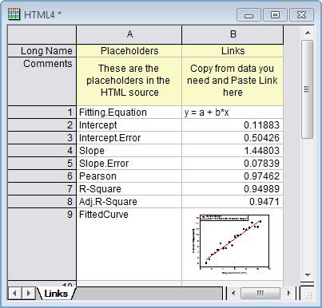

HTML- und Markdown-Bericht
HTML-Report
Seit Origin 2019b unterstützt das Notizfenster zwei Modi: den üblichen Editiermodus und den Rendermodus. Wenn Sie einen Bericht gemäß der HTML- oder Markdown-Syntax im Notizfenster bearbeiten, können Sie den Bericht mit dem Rendermodus zeigen. Im Bericht können Sie auf Origin-Diagramm, Bild in Matrix, Analysetabelle und jede Arbeitsblattzelle verweisen. Wenn die Quelle sich ändert, wird auch das verknüpfte Notizfenster aktualisiert. Aufgrund des Rendermodus' können Notizfenster als Analysebericht dienen.
In den Rendermodus wechseln
Der Standardmodus des Notizfensters ist der Textmodus. Zum Wechseln in den Rendermodus können Sie eine dieser vier Methoden verwenden:
- Wählen Sie Notizen: Rendermodus im Menü.
- Klicken Sie mit der rechten Maustaste auf den Notizfenstertitel und wählen Sie Rendermodus.
- Aktivieren Sie das Notizfenster und drücken Sie die Tastenkombination Strg + M.
- Führen Sie das Labtalk-Skript aus:
note.view=1;
| Hinweise: Wenn Sie die Markdown-Syntax im Notizfenster verwenden, müssen Sie die Syntax in Markdown ändern, bevor Sie zum Rendermodus wechseln. |
Syntax im Notizfenster
Im Notizfenster zeigt der Bearbeitungsmodus standardmäßig Plain text als Syntaxoption. Wenn Sie mit HTML- oder Markdown-Syntax arbeiten möchten, können Sie die Syntax-Option ändern. HTML zeigt die Farbkodierung der HTML-Syntax, während die Markdown-Syntax dem Rendermodus helfen kann, sie zu identifizieren.
Um die Syntaxoption zu wechseln können Sie eine dieser Methoden verwenden:
- Wählen Sie Notizen: Syntax: Text / Origin Rich Text / HTML / Markdown im Menü.
- Klicken Sie mit der rechten Maustaste auf den Titel des Notizfensters und wählen Sie Syntax: Text / Origin Rich Text / HTML / Markdown.
- Führen Sie das Labtalk-Skript aus:
note.syntax=0; //switch to plain text note.syntax=1; //switch to colored HTML syntax note.syntax=2; //switch to Markdown note.syntax=3; //switch to Origin Rich Text
Zeilennummer zeigen
Wenn Notizfenster sich im Bearbeitungsmodus befinden, können Sie Notizen: Zeilennummer anzeigen aktivieren, um die Zeilennummern zu zeigen.
Links in Zellenwerte, Origin-Objekte, Zeichenketten und Variablen einfügen
Mit einer der beiden folgenden Methoden können Sie Diagramme und Arbeitsblätter, Zellenwerte, Tabellen, Matrizen, Zeichenketten und Variablen in das aktive Notizfenster einfügen:
-
- 
- Mit Hilfe des Menüs Notizen: Links hinzufügen....
- Durch manuelles Einfügen von Objekten mit Hilfe der folgenden Syntax:
{{type://notation}}
Die folgenden Verknüpfungstypen werden unterstützt.
| Eingabe |
Notation |
Beschreibung |
Beispiele |
| Diagramm |
Der Diagrammfenstername |
Ein Diagrammfenster wird als ein Bild (.png) eingefügt. |
<img alt="{{graph://Graph1}}" width=400> |
| Matrix |
Der Matrixfenstername |
Es wird ein Matrixbild eingefügt. Beachten Sie, dass Sie ein Bild (jpg/png/bmp etc.) per Drag&Drop in ein Notizfenster ziehen können, um es einzufügen. Das entsprechende Matrixfenster wird erstellt und die Syntax automatisch in die Notizen eingefügt. |
<img alt="{{matrix://matrix1}}"> |
| Zelle |
Bereich der Zelle |
Der Inhalt einer Arbeitsblattzelle wird als Zeichenkette eingefügt.
Die Syntax ist [book_name]sheet_name!column_name[row-index]. |
{{cell://[book1]1!B[3]}} |
| Tabelle |
Bereich der Tabelle |
Es wird ein Arbeitsblatt, eine Tabelle oder eine Zelle (aus dem Berichtsblatt) als HTML-Tabelle eingefügt.
Die Syntax lautet
[book_name]sheet_name!
oder
[book_name]sheet_name!table_name. |
{{table://[Book1]Sheet1!}}
{{table://[Book2]FitLinear1!Parameters}}
{{cell://[HiddenPeaks]FitPeaks1!Parameters.Footnote}}
|
| str |
Das Labtalk-Skript der Zeichenkette |
Zeichenkette eingeben, zum Beispiel Labtalk-Zeichenkettenregister |
{{str://mystring$}}
{{str://%G}} (display current project name)
{{str://%@F}} (display current Project Explorer folder name)
|
| var |
Labtalk-Skript der Zeichenkette |
Variable einfügen |
{{var://system.path.program$}} (Programmordnerpfad anzeigen)
{{var://[Book1]!page.info.SYSTEM.IMPORT.FILENAME$}} (display imported file name)
|
 |
- Sie können Kopieren und Verknüpfung einfügen verwenden, um Origin-Objekte einzufügen. Wenn sich ein Notizfenster im Textmodus befindet, können Sie das Origin-Objekt kopieren und dann den Syntaxcode per Verknüpfung einfügen in das Notizfenster einfügen.
- Das Notizfenster wird in den Rendermodus umgeschaltet. Falls nun ein Diagramm in die Notiz eingefügt wird, wird eine Bilddatei (.png) des Diagramms erzeugt und der Bild-Tag mit dem PNG-Pfad ersetzt. Wenn das Graph aktualisiert wird, wird das Notizfenster entsprechend aktualisiert.
|
Platzhalter verwenden, um Links einzufügen
Im Notizfenster werden Platzhalter unterstützt, um Links einzufügen. Dabei handelt es sich um eine spezielle Arbeitsmappe mit dem Namen HTML, in der die Platzhalter und die Links aufgeführt werden.
Um die Arbeitsmappe zu öffnen, die die Platzhalter auflistet:
- Wählen Sie Notizen: Platzhalter bearbeiten im Menü.
- Klicken Sie mit der rechten Maustaste auf den Titel des Notizfensters und wählen Sie Platzhalter bearbeiten.
In der Arbeitsmappe befinden sich in der ersten Spalte die Namen der Platzhalter und die Zellen in der zweiten Spalte listen den Inhalt der Links auf. Sie können Variablen und Diagramm in die Zelle einfügen und diese Syntax verwenden, um Platzhalter im Notizfenster einzufügen:
{{Placeholder}}
- Verwenden Sie Kopieren und Verknüpfung einfügen, um die Links für Origin-Objekt, Zeichenkette und Variable in die Zellen der zweiten Spalte dieses Arbeitsblatts einzufügen.
oder
- Klicken Sie mit der rechten Maustaste auf die Zellen der zweiten Spalte und wählen Sie Diagramm einfügen oder Variable einfügen, um die Links einzufügen.
LaTeX-Gleichung einfügen
Um eine LaTeX-Gleichung einzufügen:
- Klicken Sie mit der rechten Maustaste in das Notizfenster und wählen Sie MathJax-Skript einfügen.
Dies fügt folgende MathJax-Skripte ein, um die LaTeX-Notation in der Markdown- und HTML-Syntax zu rendern:
<script src="http://olab/resource/ProgramData/OriginLab/JS/MathJax/config.js" defer></script> <script type="text/javascript" id="MathJax-script" src= "http://olab/resource/ProgramData/OriginLab/JS/MathJax/tex-svg.js" defer></script>
Um Beispiele zum Einfügen von LaTeX-Gleichungen zu sehen, wählen Sie bitte im Menü Notizen: Beispiele laden: LaTeX Equations.html(md).
Beispiele für Berichte
Sie können auf unsere integrierten Beispiele zugreifen, indem Sie im Menü Notizen: Beispiele laden wählen.
Hier erstellen wir einen Ergebnisbericht einer linearen Anpassung mit HTML, HTML mit Platzhaltern bzw. Markdown. Sie können ihre Unterschiede vergleichen.
Zuerst müssen wir die Analyse vorbereiten. Erstellen Sie ein neues Projekt und importieren Sie die Daten <Origin-Installationsordner>\Samples\Curve Fitting\Sensor01.dat in Book1. Ändern Sie den Fensterkurznamen in Sensor01. Markieren Sie das Arbeitsblatt und erstellen Sie ein Punktdiagramm. Führen Sie eine lineare Anpassung (Analyse: Anpassen: Lineare Anpassung) mit Standardeinstellungen durch.
Beispiel 1: HTML-Bericht erstellen
- Erstellen Sie ein neues Notizfenster und geben Sie die folgende Syntax ein.
<html> <head> <style> td { text-align: center; } </style> </head> <body> <h1 style="color:#4285F4">Linear Fit Report</h1> <b>File Information:</b></br> <table class="origin-table centered" width="400px" > <tr> <th>File Name</th> <th>Fitting Equation</th> </tr> <tr> <td>Sensor01</td> <td>{{cell://[Sensor01]FitLinear1!Notes.Equation}}</td> </tr> </table> </br> <b>Fitted Parameters & Statistics:</b></br> <table class="origin-table centered" width="700px" > <tr> <th>Intercept</th> <th>Slope</th> <th>Degrees of Freedom</th> <th>R-Square (COD)</th> <th>Adj. R-Square</th> </tr> <tr> <td>{{cell://[Sensor01]FitLinear1!Parameters.Intercept.Value}}± {{cell://[Sensor01]FitLinear1!Parameters.Intercept.Error}}</td> <td>{{cell://[Sensor01]FitLinear1!Parameters.Slope.Value}} ± {{cell://[Sensor01]FitLinear1!Parameters.Slope.Error}}</td> <td>{{cell://[Sensor01]FitLinear1!RegStats.C1.DOF}}</td> <td>{{cell://[Sensor01]FitLinear1!RegStats.C1.RSqCOD}} </td> <td>{{cell://[Sensor01]FitLinear1!RegStats.C1.AdjRSq}}</td> </tr> </table> </br> <img alt="{{graph://Graph1}}" width=350> </body> </html>
- Klicken Sie mit der rechten Maustaste auf den Fenstertitel und wählen Sie Syntax: HTML.
- Klicken Sie mit der rechten Maustaste erneut auf den Fenstertitel und wählen Sie Rendermodus. Sie können den Bericht folgendermaßen sehen:

Beispiel 2: Platzhalter verwenden, um Links in HTML-Bericht einzufügen
- Erstellen Sie ein neues Notizfenster und geben Sie die folgende Syntax ein.
<html> <head> <style> td { text-align: center; } </style> </head> <body> <h1 style="color:#4285F4">Linear Fit Report</h1> <b>File Information:</b></br> <table class="origin-table centered" width="400px" > <tr> <th>File Name</th> <th>Fitting Equation</th> </tr> <tr> <td>Sensor01</td> <td>{{Fitting.Equation}}</td> </tr> </table> </br> <b>Fitted Parameters & Statistics:</b></br> <table class="origin-table centered" width="700px" > <tr> <th>Intercept</th> <th>Slope</th> <th>Degrees of Freedom</th> <th>R-Square (COD)</th> <th>Adj. R-Square</th> </tr> <tr> <td>{{Intercept}}± {{Intercept.Error}}</td> <td>{{Slope}} ± {{Slope.Error}}</td> <td>{{DOF}} </td> <td>{{R-Square}} </td> <td>{{Adj.R-Square}}</td> </tr> </table> </br> <img alt="{{FittedCurve}}" width=350> </body> </html>
- Klicken Sie mit der rechten Maustaste auf den Titel des Notizfensters und wählen Sie Syntax: HTML.
- Klicken Sie mit der rechten Maustaste auf den Titel des Notizfensters und wählen Sie Platzhalter bearbeiten, um das Arbeitsblatt zu öffnen. Geben Sie den Namen des Platzhalters in der ersten Spalte ein. Kopieren und fügen Sie die Links des Anpassungsergebnisses in der zweiten Spalte ein.

- Klicken Sie mit der rechten Maustaste auf den Fenstertitel und wählen Sie Rendermodus. Den Bericht erhalten Sie wie in Beispiel 1.
|
Vergleichen Sie die HTML-Syntax in Beispiel 1. Sie werden sehen, dass die Platzhalter dabei helfen, das HTML in Beispiel 2 zu vereinfachen.
|
Beispiel 3: Markdown-Bericht erstellen
- Erstellen Sie ein neues Notizfenster und geben Sie die folgende Syntax ein.
# Linear Fit Report **File Information:** |File Name|Fitting Equation| |--|--| |{{File.Name}}|{{Fitting.Equation}}| **Fitted Parameters & Statistics:** |Intercept|Slope|Degrees of Freedom|R-Square (COD)|Adj. R-Square| |--|--|--|--|--| |{{Intercept}}±{{Intercept.Error}}|{{Slope}} ± {{Slope.Error}}|{{DOF}} |{{R-Square}}|{{Adj.R-Square}} <img alt="{{FittedCurve}}" width=350>
- Klicken Sie mit der rechten Maustaste auf den Titel des Notizfensters und wählen Sie Syntax: Markdown.
- Klicken Sie mit der rechten Maustaste auf den Titel des Notizfensters und wählen Sie Platzhalter bearbeiten, um das Arbeitsblatt zu öffnen. Geben Sie den Namen des Platzhalters in der ersten Spalte ein. Kopieren und fügen Sie die Links des Anpassungsergebnisses in der zweiten Spalte ein wie in Schritt 2 von Beispiel 2.
- Klicken Sie mit der rechten Maustaste erneut auf den Fenstertitel und wählen Sie Rendermodus.
|
Vergleichen Sie die HTML-Syntax in Beispiel. Sie werden sehen, dass die Markdown-Syntax einfacher zu bearbeiten ist, aber einige der speziellen Styles von HTML nicht unterstützen kann.
|